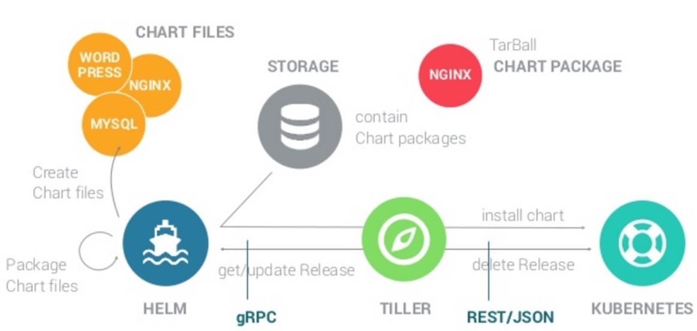

1. 概述
1.1. 什么是helm
Helm is the package manager for Kubernetes.
Helm is a tool for managing Charts.
Charts are packages of pre-configured Kubernetes resources.
Helm 是 Kubernetes的包管理工具.
Helm致力于成为k8s集群的应用包管理工具，希望像linux 系统的RPM DPKG那样成功；确实在k8s上部署复杂一点的应用很麻烦，需要管理很多yaml文件（configmap,controller,service,rbac,pv,pvc等等），而helm能够整齐管理这些文档：版本控制，参数化安装，方便的打包与分享等。
建议积累一定k8s经验以后再去使用helm；对于初学者来说手工去配置那些yaml文件对于快速学习k8s的设计理念和运行原理非常有帮助，而不是直接去使用helm，面对又一层封装与复杂度。
helm 是一个命令行工具，可在本地运行1
1.2. 解决的痛点
默认的部署Kubernetes对象的方法是使用 kubectl 命令结合 yaml 文件。但是特别麻烦
Helm是为了方便配置和部署、升级和回滚应用，尤其是多个Service组合创建的一个大型应用，比如网站。
例如：部署一个容器集合pod 运行 nginx程序并发布称为service：
Deployment :
apiVersion: apps/v1beta2 # for versions before 1.8.0 use apps/v1beta1 kind: Deployment metadata: name: nginx-deployment spec: selector: matchLabels: app: nginx replicas: 2 # tells deployment to run 2 pods matching the template template: # create pods using pod definition in this template metadata: labels: app: nginx spec: containers: - name: nginx image: nginx:1.7.9 ports: - containerPort: 80
Service :
apiVersion: v1 kind: Service metadata: name: nginx-service spec: ports: - port: 8000 targetPort: 80 protocol: TCP type: LoadBalancer selector: app: nginx
问题
更新程序的时候的时候更新不同的 yaml 文件。
痛点回顾： 没有Helm之前，我们在Kubernetes上部署一个稍微复杂点的应用：比如由Web UI项目和API项目、甚至还包含Mysql数据库组成的一个网站，我们需要
- 先创建API项目的K8s deployment，这部可能需要设定一系列环境变量
- 接着为了对外暴露服务创建K8s service，记住服务端口号和地址。
- 准备Web项目，指定API地址和其他相应环境变量，创建Web项目的K8s deployment
对外暴露服务 创建Web项目的K8s service
每次都需要操作这么多步骤才能Run起一个网站，想想好麻烦，有木有更好的方式，把这些步骤都组合起来一次执行完，而执行者不用关注各服务是如何连接和配置的？
Docker镜像是把一个单纯的App和它的安装环境整合在一起。
Kubertnetes管理Docker容器的生成和毁灭，保证Docker容器对应App的高可用（监控、自动创建）和易维护（部署和对外暴露、动态扩容、启动停止删除等）。
Helm是为了方便配置和部署、升级和回滚应用，尤其是多个Service组合创建的一个大型应用，比如网站。
Helm 通过创建和使用模板解决这个痛点
让K8s的清单（Deployment, Service等)可配置，能动态生成
Helm能够实现可配置的发布是通过模板加配置文件，动态生成K8s资源清单文件来完成的（deployment.yaml， service.yaml）。
按照动态生成的清单，调用Kubectl自动执行K8s资源部署
dfsdk
1.3. Helm 基本概念

Helm 本质是个C/S 机制的包管理程序，分为客户端和服务端两部分
1.3.1. Helm client
Helm client采用go语言编写，采用gRPC协议与远程servers交互。
1.3.2. Helm server
Tiller server 也同样采用go语言编写，提供了gRPC server与client进行交互，利用Kubernetes client 库与Kubernetes进行通信，当前库使用了REST+JSON格式。
Tiller server 没有自己的数据库，目前使用Kubernetes的ConfigMaps存储相关信息
说明：配置文件尽可能使用YAM格式
做为Kubernetes的一个包管理工具，Helm具有如下功能：
1. 创建新的chart
2. chart打包成tgz格式
3. 上传chart到chart仓库或从仓库中下载chart
4. 在Kubernetes集群中安装或卸载chart
5. 管理用Helm安装的chart的发布周期
Helm有三个重要概念：
1. chart：包含了创建Kubernetes的一个应用实例的必要信息
2. config：包含了应用发布配置信息
3. release：是一个chart及其配置的一个运行实例
1.3.3. Chart
Helm里面的资源包成为 Chart.
一个经典的 Chart文件目类结构如下:
. ├── Chart.yaml ├── README.md ├── templates │ ├── NOTES.txt │ ├── _helpers.tpl │ ├── deployment.yaml │ ├── pvc.yaml │ ├── secrets.yaml │ └── svc.yaml └── values.yaml
用户既可以创建、上传、安装自己的Chart 资源包，也可以从
https://github.com/kubernetes/charts/tree/master/stable寻找官方的Chart 资源包（像 Wordpress, GitLab, Apache 等项目都有）
1.3.4. Tiller（Helm 2）
Tiller Server 是一个部署在Kubernetes集群内部的server，其与Helm client、Kubernetes API server进行交互。
Tiller server主要负责如下：
1. 监听来自Helm client的请求
2. 通过chart及其配置构建一次发布
3. 安装chart到Kubernetes集群，并跟踪随后的发布
4. 通过与Kubernetes交互升级或卸载chart
Helm 2 是 C/S 架构，主要分为客户端 helm 和服务端 Tiller。
Helm 3 则只有 helm 的存在了。在 Helm 3 中移除了 Tiller, 版本相关的数据直接存储在了 Kubernetes 中。
1.3.5. 连接 Tiller服务
# init 命令就是安装Tiller 服务 helm init helm init --upgrade -i registry.cn-hangzhou.aliyuncs.com/google_containers/tiller:v2.6.2 --stable-repo-url https://kubernetes.oss-cn-hangzhou.aliyuncs.com/chart
1.3.5.1. 对于一个 RBAC-enabled 集群
-
将一个
1. 服务用户和2.角色绑定到你集群上的 Tiller service -
Create a service account(服务账户)
创建名为helm-rbac.yaml的文件:
apiVersion: v1 kind: ServiceAccount metadata: name: tiller namespace: kube-system --- apiVersion: rbac.authorization.k8s.io/v1 kind: ClusterRoleBinding metadata: name: tiller roleRef: apiGroup: rbac.authorization.k8s.io kind: ClusterRole name: cluster-admin subjects: - kind: ServiceAccount name: tiller namespace: kube-system
# 执行 kubectl apply -f helm-rbac.yaml
2. 安装
二进制包下载
1. 从github 上下载相应的releases 包
https://github.com/helm/helm/releases
- 解压后拷贝到
/usr/local/bin
curl -o helm-linux-amd64.tar.gz http://mirror.azure.cn/kubernetes/helm/helm-dev-v3-linux-amd64.tar.gz mkdir ~/helm-linux-amd64 tar -xvf helm-linux-amd64.tar.gz -C ~/helm-linux-amd64 cp ~/helm-linux-amd64/linux-amd64/helm /usr/local/bin/
snap下载
sudo snap install helm --classic
检查安装完成
helm version >>> version.BuildInfo{Version:"v3.0.0", GitCommit:"e29ce2a54e96cd02ccfce88bee4f58bb6e2a28b6", GitTreeState:"clean", GoVersion:"go1.13.4"} # 3.0.0 版本
3. 基础用法
3.1. 创建自定义Chart
# 创建自定义chart helm create <chart-name> # 在当前目类下查看 tree -l >>> <chart-name> ├── Chart.yaml ├── templates │ ├── NOTES.txt │ ├── _helpers.tpl │ ├── deployment.yaml │ ├── ingress.yaml │ └── service.yaml └── values.yaml ```` ## 3.2. 仓库管理 ```shell # 仓库添加 helm repo add [NAME] [URL] helm repo add stable https://kubernetes-charts.storage.googleapis.com/ helm repo add incubator https://aliacs-app-catalog.oss-cn-hangzhou.aliyuncs.com/charts-incubator/ # 查看仓库列表 helm repo list >>> NAME URL stable https://kubernetes-charts.storage.googleapis.com/ incubator https://aliacs-app-catalog.oss-cn-hangzhou.aliyuncs.com/charts-incubator/ # 寻找仓库内的所有charts helm search repo <repo-name> # 寻找所有仓库内指定chart helm search <chart-name> # 查看 chart 信息 helm inspect <repo-name>/<chart-name> # 更新仓库的charts列表 helm repo update
3.3. charts 资源包管理
#安装charts 资源包 helm install <new-release-obj-name> <repo-name/charts-name> ## 安装示例 helm install my-nginx-ingres stable/nginx-ingress # 查看已安装的chart包 helm list >>> NAME NAMESPACE REVISION UPDATED STATUS CHART APP VERSION my-nginx-ingress default 1 2019-12-23 16:26:06.932938071 +0800 CST deployed nginx-ingress-1.27.0 0.26.1 # 卸载 charts helm uninstall <new-release-obj-name> ## 示例 helm uninstall my-nginx-ingress # 升级 charts helm upgrade <YOUR-HELM-RELEASE-NAME> <repo-name>/<charts-name> --version=v0.6 -f config.yaml
对于helm install 的执行顺序发现是按照
1. configmap.yaml,
2. pv.yaml,
3. pvc.yaml,
4. deployment.yaml,
5. service.yaml,
6. ingress.yaml
的有依赖关系进行执行的，没有找到有控制和文件名的限制应该是用 kind 来做依赖分析的。
4. 国内镜像
- Helm的安装文件镜像
Helm: http://mirror.azure.cn/kubernetes/helm/
- Helm的Charts 资源镜像
Stable Charts: http://mirror.azure.cn/kubernetes/charts/ Incubator Charts: http://mirror.azure.cn/kubernetes/charts-incubator/
添加镜像示例：
helm repo add stable http://mirror.azure.cn/kubernetes/charts/ helm repo add incubator http://mirror.azure.cn/kubernetes/charts-incubator/rep
5. 参考资料
https://v2.helm.sh/docs/helm/